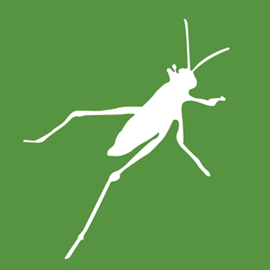

The purpose of this assignment was to learn about 3D printing by building on existing skills with laser cutting and Rhino/Grasshopper. The problem statement was:
Please make a lamp using both laser cut and 3D printed parts. Using your lamp innereds' measurements as a point of departure, make a lamp that can be assembled around the innereds and does not use glue, fasteners, adhesive, etc. This will require you to think carefully about the interface between your lasercut and 3D printed parts. Imagine your lamp being in a domestic setting---perhaps it will not be wildly shaken, but it should not fall apart with normal use.
I was really excited to learn more about 3D printing. In class, we got a crash course in using Rhino and Grasshopper for 3D modeling. I've used other CAD software before but only for highly constrained projects. This was the first time I was asked to use the software creatively and deliver a 3D artifact. I immediately began browsing the internet for inspiration and came across Nervous System, a design group I had explored in the past. I'd been fascinated by all of their work, specifically their intricate 3D printed lamps. Now that I had more background knowledge in 3D modeling, I began to wonder whether I could make something similar to their work. Funnily enough, I had their webpage open and was browsing through their past work when I looked up and saw the same pictures on the lecture slides. I added some lamp inspiration to my Pinterest board for this class and was particularly inspired by this lamp by Nervous System:
In this picture, the light source for the lamp is sitting on a table. Once I heard that the assignment needed to involve laser cut parts, I thought about how I could suspend the light source in the middle of the lamp. I was pretty far down the 3D printing rabbit hole at that point and found it a lot easier to think of my lamp as something that would be mostly 3D printed with a few laser cut fasteners.
I started brainstorming based on my existing and desired skills for Rhino/Grasshopper:
My first goal was to create a rotated hexagon shape that would expand in the middle. I knew that I could use the Loft or Extrude commands in Grasshopper to do this. I thought that Extrude would not provide the rotation I wanted (I later learned about ExtrudeCrvAlongCrv). I played around with Loft and figured out that I could loft through multiple shapes and set the amount of rotation along each step of the loft. I was able to get the shape I wanted by using Loft on three hexagons located along the z-axis, the middle of which was about twice as wide as the other two. I experimented with the "closed loft" option and found that it connected the top and bottom curves to create a toroid. This was really close to the shape I wanted.
The middle of this toroid was far too small to accommodate a lightbulb so I knew I would need to use the BooleanDifference tool to make more space in the middle of the shape. In order to preserve the curves through the middle, I created a curved cylinder using the Revolve and Cap commands on a curve. I aligned the cylinder and toroid to be concentric, as pictured below.
The path to getting this end shape was not quite as smooth as the above description may suggest. This took quite a lot of trial and error with the various commands. Before getting to my final shape, I tried using the Loft command on two sets of hexagons. I kept the top and bottom hexagons the same but did one loft with a larger middle hexagon and one with a smaller middle hexagon, trying to create a rough approximation of a toroid. This didn't have the smooth visual effect I wanted for my lamp. I also tried revolving a leaf-shaped curve to create a toroid but this didn't produce the more complex rotated hexagon that I needed. I had to mess around with the shape and size of the cylinder to subtract from the final shape, since a curved cylinder of the same height as the toroid took too much away from the final shape. I also learned that BooleanDifference only works with two closed shapes, something that caused some frustration when I tried using the command before putting a cap on my cylinder.
I determined the size of the center of the lamp by measuring a standard lightbulb (60mm diameter). I read online that 40-60W bulbs should be located approximately 2 inches from a lampshade. My lightbulb was not that powerful but I wanted the lamp to support that type of bulb in the future. I combined the diameter of the bulb with the required distance and settled on a center lamp diameter of approximately 130mm. This would allow the lamp to fit a weaker standard bulb or a smaller strong bulb while being small enough to fit in the 3D printer.
Once I had a basic shape for the lamp, I set about creating a surface pattern. Unlike examples we were given in class, I wanted to cut a pattern into my existing surface instead of creating a surface out of a repeating shape. In hindsight, I probably could have tiled the surface with a rectangle with circles cut out of it. However, I chose the more complicated option (an emerging pattern for this class) and just tiled the surface of my shape with ovals.
Except I didn't. I'd tried to do use surface patterns with a couple of test shapes earlier. After tweaking the geometric pattern and the frequency of the tiles, I wound up with something that was so gorgeous it crashed Rhino:
I believe this was caused by incorrectly setting the surface and geometry, though I had thought they were correct. I reset all of my connections and associated surfaces/geometries and the problem fixed itself. When trying to do this with my final hexagon shape, I ran into yet more issues. My test shapes had been surfaces but the results of all my lofting and boolean differences in Rhino had produced a polysurface. I couldn't find an easy way to create a surface from a polysurface. The eventual solution to this issue was to Explode the entire shape, apply the tiling pattern to a single side, and use a Grasshopper Polar Array to re-create the hexagon shape. I also wasn't able to do this for the inner cylinder. I could have applied the pattern to that cylinder as well but I liked the idea of having the middle be solid to diffuse the light in the lamp.
Finally, I baked the pattern onto the Rhino canvas and trimmed all of the circles from the original hexagon toroid. Knowing what I know now, this process could have gone much faster. Once I had my baked and trimmed shape, I used an x-y plane to slice it in half. I wanted the lamp to be comprised of two large sections securing a lightbulb holder between them. I quickly used Boolean Difference to remove a hexagon shape from the center of the lamp such that the corners would overlap with the inside of the torus. I made sure that the height of the hexagon was larger than the material I would use to laser cut this hexagon. Finally, I copied the hexagon shape outside of the torus and cut a 38.4mm wide circle from it, the circle being slightly bigger than the bottom of my lightbulb.
To attach the two halves of the torus together, I quickly made three small latches that could attach to holes in the sides of the center column of the toroid. I intended to laser cut these latches from either wood or chipboard so I made sure that the holes would be wide enough to accommodate that thickness of material.
Finally, I had my two hexagonal torous halves, my three latches, and a hexagon bulb holder. I was ready to laser cut and 3D print.
Here are the links to the source files for the project:

STL: Part A Part B
Gcode: Part A Part B
SVG
Once I was finished working in Rhino, I downloaded Slic3er, the software needed to prepare my model for the 3D printer. I used a Prusa i3 MK3 printer. I quickly found out that I had made the shape far too big for the bounds of the printing bed. I had thought I was fairly close to the dimensions but after re-checking my math I found that I had to scale down the lamp by 50%. Unfortunately, this meant having to make adjustments to my model so that the laser cut parts and lightbulb would fit. I thought that it might be worth starting from scratch but I definitely didn't have enough time. I widened the holes on my model for the connector pieces and made the lightbulb holder cutout from the hexagon the correct size. Otherwise, I decided to use a thinner material for the laser cut parts.
Once my model was properly scaled, I set the printer to go with PLA filament and a 0.20mm print quality setting. I selected the Brim option to print a strong base for my parts. I found that I needed to cut off the bottom layer of print so that all parts of the foundation would have the brim base. Once I was satisfied with these settings, I sliced the model and exported the file to a gcode format. This was the actual file that I fed into the printer via SD card. I loaded up the files and started to print!
While this was printing, I exported my laser cut pieces to Inkscape and cut them out of 1.25mm thick chipboard. I copied my chipboard settings from last week, 30 power and 100 speed. Thankfully, there were no issues with this part of the process.
Once all the pieces were done printing, I assembled everything together with my light bulb. Though the scale wasn't what I originally hoped, I succeeded in making a thing comprised of 3D printed and laser cut parts that holds a light bulb!
I want to learn more about lofting and surface patterns using Rhino and Grasshopper. This assignment was an interesting challenge and I still feel like I have a lot to learn. I especially would like to know easy ways to produce surfaces (not polysurfaces!) in Rhino to more easily manipulate them in Grasshopper. I think that some fun future projects along these lines would be to try and create more shapes inspired by the work on my Pinterest board. Who knows what shapes I could learn to make next?
{kind=link}